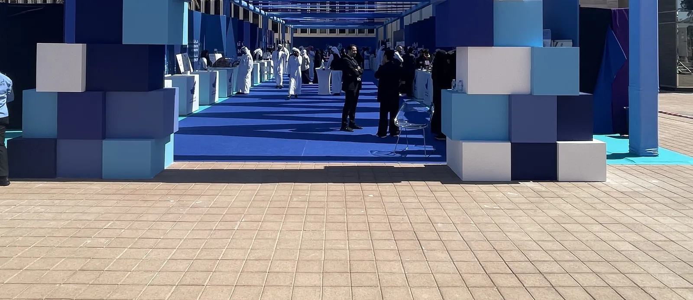
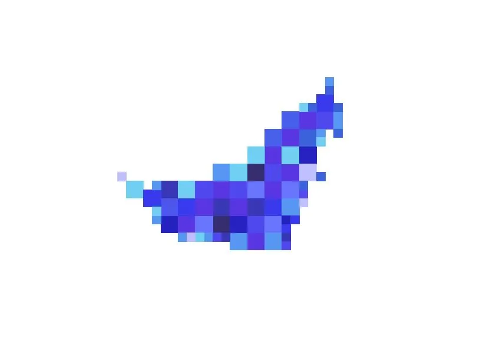
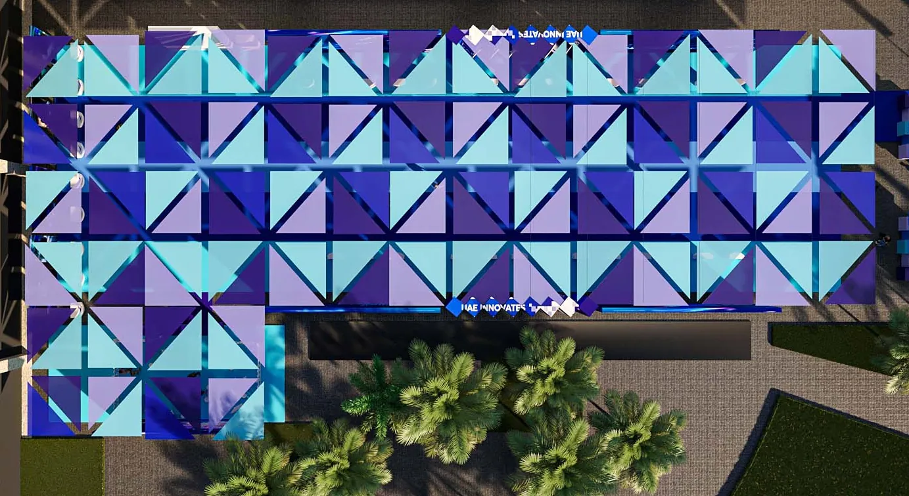
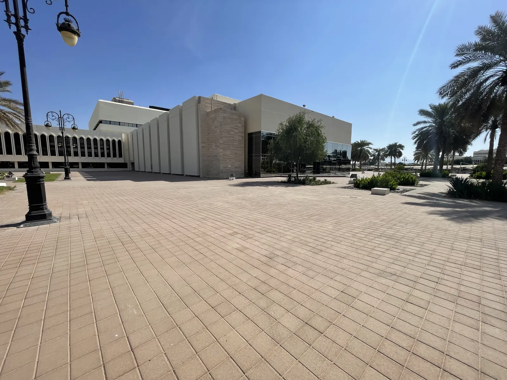
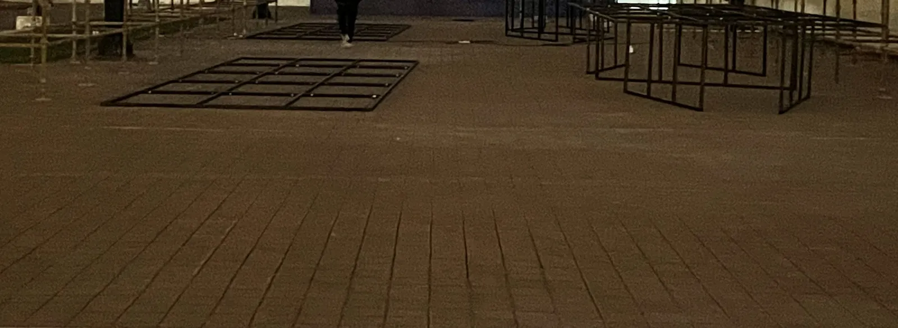
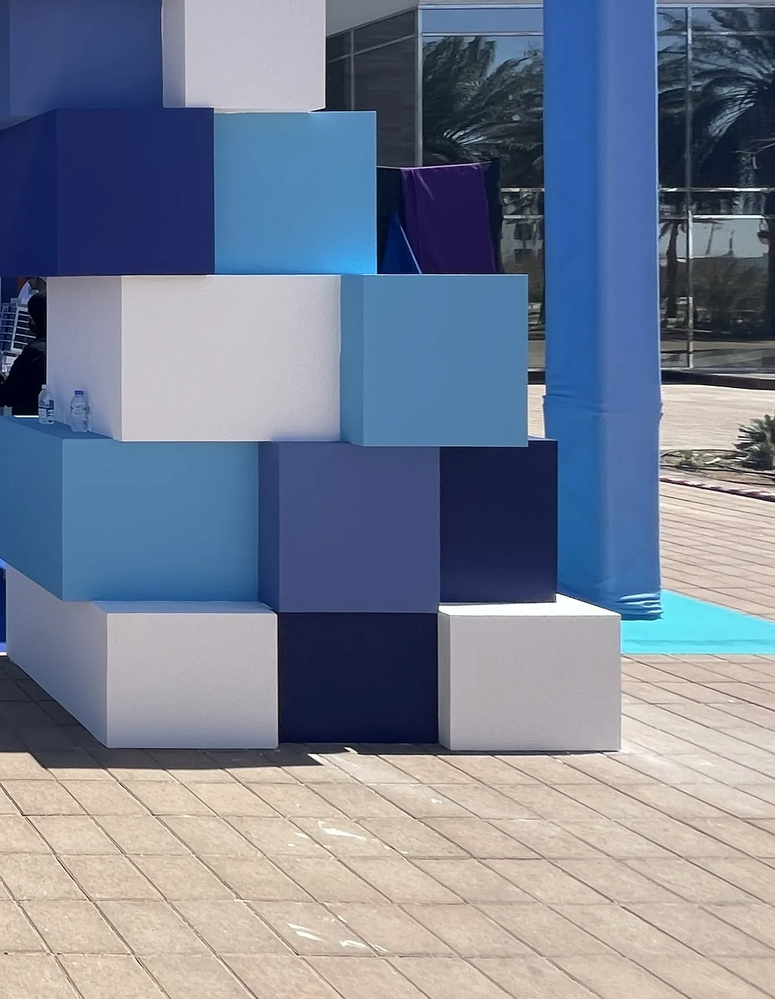

Innovation Month, Al Ain · Al Ain · 2024
A map of squares became a gate.
Creative Director and Producer · Innovation Month, Al Ain City MunicipalityAntBrush · Al Ain · 2024
Two days of innovation on the municipality’s forecourt. The national campaign’s mark is a map drawn in squares. I gave each square depth, so it became a box, and stacked the boxes into a gate. In December the forecourt was empty. On 21 February it opened.

The idea
The idea was in the mark.
The national campaign’s mark is a map drawn in squares. I took the square, gave it depth so it became a box, and stacked the boxes into a gate twelve metres wide.


Three dates
Empty. Steel. Open.
The same forecourt of the municipality’s main building in Al Ain, three times.



The full story
Every step, in order.
For Al Ain City Municipality. Built with Halwan Advertising and Production. Pictures are cropped wherever the campaign’s bilingual lettering could be read.
See the full story